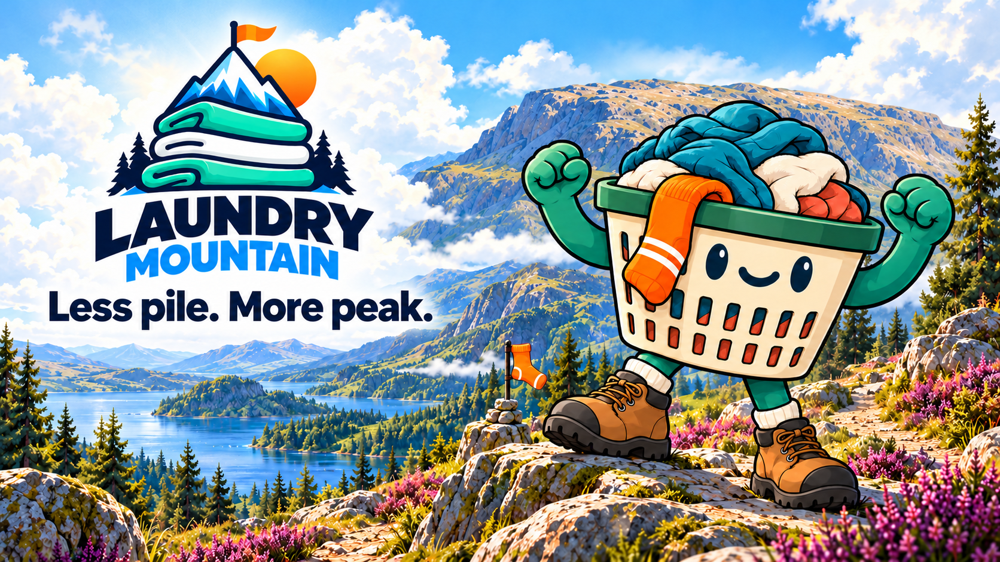
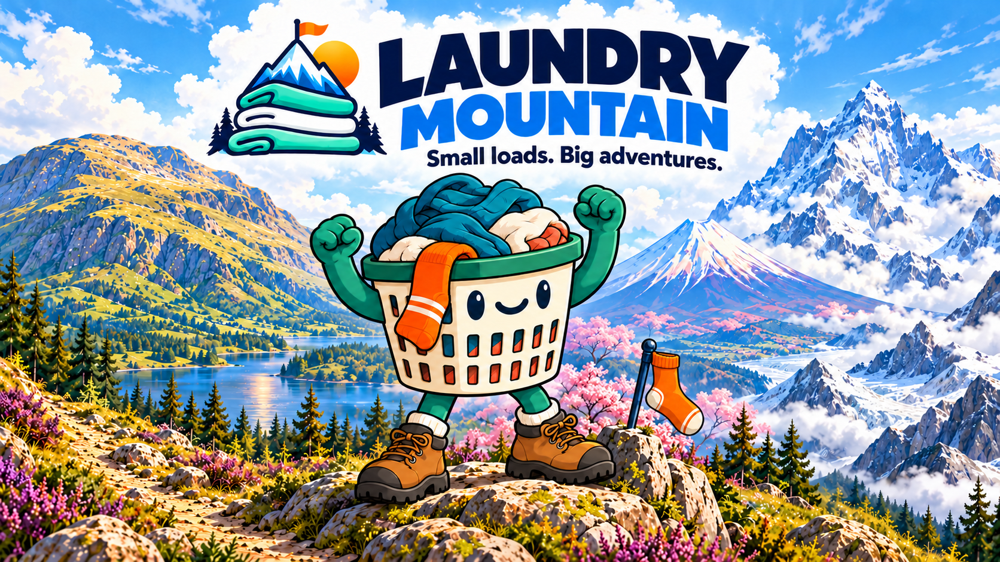
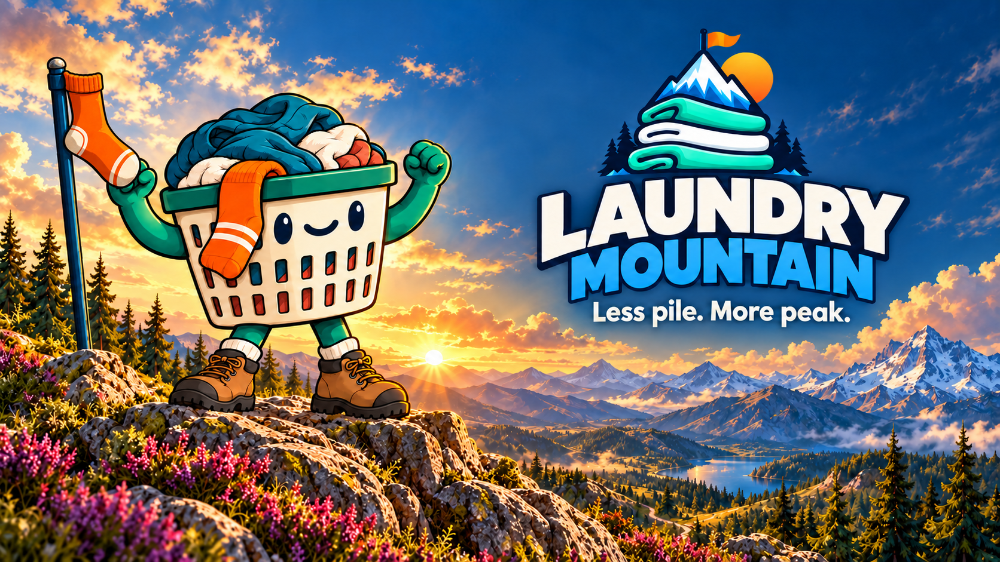

Three ways to meet your mountain.
Alternative trailer thumbnails and promotional covers. The app's approved screens stay as they are. Each uses the same basket, mountain world and brand.
A · Highland adventure

The direct, welcoming introduction. Bright clouds keep the logo and tagline clear.B · Three peaks

The recommended thumbnail: tells the three-mountain story at a glance.C · Summit celebration

The cinematic option: a warmer finish for the trailer or launch announcement.Generation prompts · Generated illustration concepts, not app screenshots.